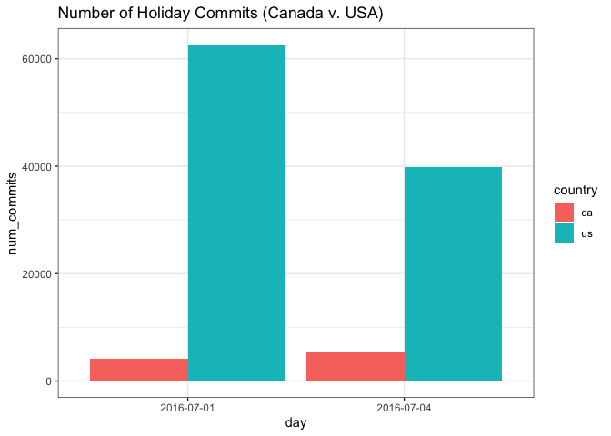

Chapter 2 Curiosity and Play
Here is a blog post that I wrote about this lesson and about playing with data and how to infuse joy into learning statistics.
2.1 Curiosity killed the cat, but satisfaction brought it back
Sometimes, some of the most intricate problems arise from simple musings among friends. This is one of the beautiful things about problem solving, programming, and statistics. When you are curious enough and excited about a problem, you may find yourself exploring every caveat just to prove your point. (Be careful though, don’t forgo sleep. We cover the detrimental effects of missing sleep on your coding performance in another lesson.) While it is very important to tackle real problems that are genuinely affecting people’s lives, first we have to learn to wrangle statistics and ask the right kinds of questions. Learning this skill will help you to ask critical questions when it really counts, like when building software for hospitals, news sites, financial institutions, or maybe the next rocket to Mars. One of the best ways to teach these skills is to lock on to a personally meaningful, but low-stakes, question; and answer it.
2.2 Playing with Data
In this lesson, you will learn to meaningfully play with data. So often in our academic careers we are expected to perfectly follow along and do things the “right” way, in order to build our skills to become an essential and productive member of a team/company/society. We can get through our math classes by “plugging-it-in” to equations, get through English by practicing flash cards, and get through History by memorizing dates. But we can gain a lot through creatively expressing ourselves in our learning. So this lesson will demonstrate how to make queries to archived GitHub data, generate plots of interest, and answer our own curiosities (sometimes frivolous, but who cares?) You will have several chances to creatively express yourself in this lesson, while still being guided by examples.
2.3 GHTorrent and BigRQuery
We need to begin by getting data. Luckily the GHTorrent project has been archiving data from the GitHub API for the past several years, and we can get access to commits, users, forks, repos, locations (see GitHub in glossary) and more. While there are several ways to load this data into R, we are going to rely on bigrquery to interface with Google BigQuery and the public GHTorrent data on the Google Cloud. Here are the steps you need to take:
- Set up an account with Google Cloud. They do require a credit card number, which is ridiculous. But they will not auto-charge you when your free trial is up.
- Create a project from the Google Cloud console. Name it using something you’d like to use to access the project with
bigrquery - Make sure to enable the BigQuery API for the project. Go to the APIs & Services card on the console, and navigate to “Enable APIs and Services” where you can search for ‘BigQuery’ and enable it.
- You will be able to test out SQL queries on here
- The GHTorrent project for BigQuery is located here, with a small tutorial here
The next piece of this is to not only understand that the data is being held on the Google Cloud (that we can access with SQL queries, but to understand how we can do that from our local machines, in R. We will use the bigrquery package, with a tutorial here. bigrquery allows us to link our R code to our project on the cloud. You will be asked to authenticate. For the record, I did not know what the “cloud” really meant for a while, and was too afraid to ask.
2.3.1 DataFiles for this Lesson
For this lesson, we actually stored all of the queries in datafiles in this repository. Accessing the data required a credit card, which is unreasonable to expect from anyone just trying to use these lessons to learn. If you do want to perform different queries of your own, there are several ways to do that. I have included how you could do it using BigQuery and bigrquery (that’s the R package, see the r in there?). Any time you see query_exec() it will be commented out and you will use the data we have provided from the result of that query as of September 2019. That way, you can see how the query would be executed but also you don’t need to fiddle with APIs to follow along in this lesson.
library(bigrquery)
library(ggplot2)
#- bq_auth(path="servicetoken.json") # you will need to get your own service token from your account. Don't share this!
#- project <- "gitstats" #your project name here2.4 Alan Turing’s Birthday Examples (learn some SQL queries)
Here are some examples for using bigrquery to access GHTorrent data. Here, we take a look at Alan Turing’s birthday (June 23) for the year 2016.This should help you get the hang of some SQL commands and collecting data. I chose Alan Turing because I’m an Artificial Intelligence nerd, and once even had a hamster named Turing. You can plug in your own birthday, or the birthday of someone else you admire. The point is to start playing.
There is a lot to unpack in your first SQL command. Here’s a small recipe for reading the examples:
- the first line indicates what columns will come out in the final dataframe (
select p.language as language, count(c.id) as num_commits) WHEREis similar toiflogic, and it grabs anything that fits the specified condition- in the following example, we care about anything in the ghtorrent database
WHERE date(created_at) = date('2016-06-23)) - that means that the commit data from ghtorrent has a
created_atproperty, and we want data from where that date equals Alan Turing’s birthday in 2016 - the
languageproperty of those commits to GitHub are stored in the ghtorrent-bq.ght.projects database, and we want to report all the languages used on the day we selected, except for if thelanguageproperty isnullbecause that’s not helpful to us (unless you care about that) - we
group_bylanguage, meaning that we want to see the number of commits for each language separately. We are going to compare the different languages and their relative number of commits on this day. - and finally, we order everything in the data by the number of commits, in descending order. We want to see the most commits first.
- Do you have any predictions for which language was the most committed to?
#- # walking through an SQL example
#- # language with most commits on Alan Turing's birthday in 2016
#- sql_birthday <- "SELECT p.language as language, count(c.id) as num_commits
#- from [ghtorrent-bq.ght.project_commits] pc join
#- (SELECT id, author_id, created_at FROM [ghtorrent-bq.ght.commits] WHERE
#- date(created_at) = date('2016-06-23') )c on pc.commit_id = c.id join
#- (SELECT id, language, description
#- FROM [ghtorrent-bq.ght.projects] WHERE language != 'null')p on p.id = pc.project_id join
#- (SELECT login, id
#- FROM [ghtorrent-bq.ght.users]) u on c.author_id = u.id,
#- group by language
#- order by num_commits desc;"2.5 Execute the query
We use query_exec to execute the query with bigrquery to the ghtorrent database, hosted on BigQuery. We get back a dataframe, stored in bday_commits.
#- # executing the query if you aren't using data provided
#- bday_commits <- query_exec(sql_birthday, project = project, useLegacySql = FALSE) #remember we defined 'project' up above
# reading in data for the above query that we stored earlier
bday_commits <- read.csv("data/curiosity_and_play/bdaycommits.csv")
kable(head(bday_commits)) %>%
kable_styling(bootstrap_options = c("striped", "hover"))| language | num_commits |
|---|---|
| JavaScript | 45497 |
| Java | 34379 |
| Python | 31760 |
| HTML | 23366 |
| C++ | 19956 |
| C | 17601 |
2.6 Visualize the Data
The following is a ggplot of the top 7 languages used on Alan Turing’s birthday, by number of commits to each.
bday_commits[1:7,]selects the first 7 rows in the dataframeaes()is the “aesthetic”: what is the x and y that you are plotting?fill = languageis simply how we get the pretty colors to show upgeom_barindicates that we want a bar plot. We could also usegeom_point()for a scatter plotstat="identity"indicates that the bar plot should use the raw value of num_commits instead of a different statistical transformationxlab,ylab,andggtitleare the x-axis label, y-axis label, and title, respectivelytheme_bw()` is “Theme Black and White” and I just like it better
plt = ggplot(bday_commits[1:7,],aes(language,num_commits,fill=language))+
geom_bar(stat="identity")+
xlab("Language")+
ylab("Number of Commits")+
ggtitle("GitHub Commits by Language on Alan Turing's Birthday")+
theme_bw()
pltI can’t imagine that Alan Turing would have been the biggest JavaScript fan. Let’s take a look at projects where the project description includes “AI”. Here, we see Python emerge as top commits for the day.
#- # languge with most commits on Alan Turing's birthday in 2016
#- sql_example2 <- "SELECT p.description as description, p.language as language, count(c.id) as num_commits
#- from [ghtorrent-bq.ght.project_commits] pc join
#- (SELECT id, author_id, created_at FROM [ghtorrent-bq.ght.commits] WHERE
#- date(created_at) = date('2016-06-23') )c on pc.commit_id = c.id join
#- (SELECT id, language, description
#- FROM [ghtorrent-bq.ght.projects] WHERE language != 'null' and description LIKE '%AI%')p on p.id = pc.project_id join
#- (SELECT login, id
#- FROM [ghtorrent-bq.ght.users]) u on c.author_id = u.id,
#- group by description,language
#- order by num_commits desc;"
#- # executing the query if you aren't using data provided
#- example2 <- query_exec(sql_example2, project = project, useLegacySql = FALSE)
# reading in data for the above query that we stored earlier
example2 <- read.csv("data/curiosity_and_play/example2.csv")
plt = ggplot(example2[1:6,],aes(language,num_commits,fill=language))+
geom_bar(stat="identity")+
ggtitle("Commits to 'AI' Projects on Alan Turing's Birthday",subtitle="Who would even want to know this?")+
theme_bw()
pltpython_desc <- example2[example2$language=='Python',]
python_desc <- python_desc[order(-python_desc$num_commits),]
kable(python_desc[1:10,])%>%
kable_styling(bootstrap_options = c("striped", "hover"))| description | language | num_commits | |
|---|---|---|---|
| 1 | Record for playing with OpenAI Gym | Python | 42 |
| 5 | rllab is a framework for developing and evaluating reinforcement learning algorithms, fully compatible with OpenAI Gym. | Python | 14 |
| 8 | AI of bombｌiss(almost tetris) on NES | Python | 8 |
| 9 | :alien: An AI project. :alien: | Python | 8 |
| 16 | AI for 2048 using simple reinforcement learning | Python | 6 |
| 27 | SIMA and RAIN comparison | Python | 4 |
| 35 | The OAI Harvest module handles metadata gathering between OAI-PMH v.2.0 compliant repositories. | Python | 3 |
| 37 | This depot is used for learning of AI for robotics in Udacity | Python | 3 |
| 46 | Website version of the AIS Network Mapper project | Python | 3 |
| 53 | Gen-6 Pokemon Battling Sim and AI | Python | 2 |
2.7 Language Growth over Time
Let’s investigate another question. Do you know anyone who is obsessed with a certain language? Maybe they can’t stop talking about how Julia (programming language) is gonna rule the world, or how Golang is the future because of all that multithreading (I’ve never used Golang). Or maybe you’re a straight up fan of some language and you want to make sure that other people know how awesome it is (Scala, anyone?) This is a fun exercise in seeing how languages grow over time, by the number of commits for those projects on GitHub. In this example:
- we
SELECTlanguage, day, and num_commits to make a dataframe where we can monitor commits over time for different languages - we use
WHERE language == 'Python'to select all projects where the language is Python - the
||syntax indicates a logical OR symbol. We are collecting Python or Scale or Julia or Ruby… or whatever else you’d like to plug in. - We
group_by(language,day)to get the number of commits, by language, by day, over time. - And finally, we order the data by the greatest number of commits first
#- language_sql <- "SELECT p.language as language, date(created_at) as day,count(c.id) as num_commits
#- from [ghtorrent-bq.ght.project_commits] pc join
#- (SELECT id, author_id, created_at FROM [ghtorrent-bq.ght.commits] WHERE
#- date(created_at) between date('2012-01-01')
#- and date('2016-09-05') )c on pc.commit_id = c.id join
#- (SELECT id, language, description
#- FROM [ghtorrent-bq.ght.projects] WHERE language == 'Scala' || language == 'Python' || language == 'Julia' || language=='Ruby')p on p.id = pc.project_id join
#- (SELECT login, id
#- FROM [ghtorrent-bq.ght.users]) u on c.author_id = u.id,
#- group by language,day
#- order by num_commits desc;"
#- # executing the query if you aren't using data provided
#- lang_growth <- query_exec(language_sql, project = project, useLegacySql = FALSE)
# reading in data for the above query that we stored earlier
lang_growth <- read.csv("data/curiosity_and_play/lang_growth.csv")
kable(head(lang_growth))%>%
kable_styling(bootstrap_options = c("striped", "hover"))| language | day | num_commits |
|---|---|---|
| Ruby | 2014-06-26 | 1166068 |
| Ruby | 2014-10-21 | 1022681 |
| Python | 2014-11-11 | 881825 |
| Ruby | 2014-10-15 | 823475 |
| Python | 2014-11-18 | 790873 |
| Ruby | 2014-12-10 | 787341 |
# I want the top 3
summary <- lang_growth %>%
group_by(language)%>%
summarise(total_num_commits = sum(num_commits))%>%
arrange(-total_num_commits)%>%
head(3)
top_langs <- lang_growth[lang_growth$language %in% summary$language,]
plt =ggplot(top_langs,aes(day,num_commits,color=language,group=language))+
geom_line()+
theme_bw()+
theme(axis.text.x=element_blank(),axis.ticks.x=element_blank())
plt2.8 Commits to GitHub: Canada Day vs. July 4th
Alright, now that we have explored how to use bigrquery and generate some simple queries and plots, let’s approach another curiosity. It occurred to me that I was curious about holidays. This most recent 4th of July I checked the GitHub data to see if people commit differently on the 4th of July than they do normally. It then occurred to me that I might compare it to Canada Day, which is very close in date to American Independence Day. The queries will get more complex as we continue to explore, and refine what we want to know. You may be developing an intuition for what you believe to be true; of course people don’t commit on a holiday. They’re not working! But what about the case where company repos are kept private, and the data that GHTorrent has access to is actually “for fun” repos, and a day off is the perfect day for that programmer to keep making their alien game. Intuition is certainly important when asking statistical questions, as it guides us towards different factors to account for and questions to ask. But remember, your intuition may be the exact opposite of someone else’s.
2.8.1 Total Commits
We start by taking a look at the total commits to GitHub on either Canada Day or Independence Day, from either Canada or the United States. We immediately discover that raw count is not going to be helpful in making any meaningful comparsions. The US has orders of magnitude more commits on any given day than Canada does. While that is good to know, we need to account for it if we actually want to make comparisons.
#- data_sql <- "select u.country_code as country, date(c.created_at) as day, count(c.id) as num_commits
#- from [ghtorrent-bq.ght.project_commits] pc join
#- (SELECT id, author_id, created_at FROM [ghtorrent-bq.ght.commits] WHERE
#- date(created_at) = date('2016-07-01')
#- or date(created_at)= date('2016-07-04') )c on pc.commit_id = c.id join
#- (SELECT id,
#- FROM [ghtorrent-bq.ght.projects]) p on p.id = pc.project_id join
#- (SELECT login, location, id, country_code,
#- FROM [ghtorrent-bq.ght.users]
#- WHERE country_code = 'us' or country_code = 'ca') u on c.author_id = u.id,
#- group by country, day
#- order by num_commits desc;"
#- # executing the query if you aren't using data provided
#- total_commits <- query_exec(data_sql, project = project, useLegacySql = FALSE)
# reading in data for the above query that we stored earlier
total_commits <- read.csv("data/curiosity_and_play/total_commits.csv")
kable(total_commits)%>%
kable_styling(bootstrap_options = c("striped", "hover"))| country | day | num_commits |
|---|---|---|
| us | 2016-07-01 | 62582 |
| us | 2016-07-04 | 39811 |
| ca | 2016-07-04 | 5305 |
| ca | 2016-07-01 | 4096 |
plt = ggplot(total_commits, aes(day,num_commits,fill=country))+
geom_bar(stat="identity",position="dodge")+
ggtitle("Number of Holiday Commits (Canada v. USA)")+
theme_bw()
plt
2.8.2 Yearly Commits
What we actually need to care about is, on average do number of commits differ on a holiday? In order to do that, let’s look at number of commits per day across a year sample, between Canada and USA.
#- data_sql <- "select u.country_code as country, date(c.created_at) as day, count(c.id) as num_commits
#- from [ghtorrent-bq.ght.project_commits] pc join
#- (SELECT id, author_id, created_at FROM [ghtorrent-bq.ght.commits] WHERE
#- date(created_at) between date('2016-01-01')
#- and date('2016-09-05') )c on pc.commit_id = c.id join
#- (SELECT id,
#- FROM [ghtorrent-bq.ght.projects]) p on p.id = pc.project_id join
#- (SELECT login, location, id, country_code,
#- FROM [ghtorrent-bq.ght.users]
#- WHERE country_code = 'us' or country_code = 'ca') u on c.author_id = u.id,
#- group by country, day
#- order by num_commits desc;"
#- # executing the query if you aren't using data provided
#- year_commits <- query_exec(data_sql, project = project, useLegacySql = FALSE)
# reading in data for the above query that we stored earlier
year_commits <- read.csv("data/curiosity_and_play/year_commits.csv")
plt = ggplot(year_commits,aes(day,num_commits,colour=country))+
geom_line(aes(group=country))+
theme_bw()+
ylab("Number of Commits")+
xlab("Time(day)")+
theme(axis.text.x=element_blank(),axis.ticks.x=element_blank())+
ggtitle("2016 Commits on GitHub (Canada vs. USA)", subtitle="January 1 - September 5")
plt2.8.3 What are those fluctuations?
Look at those patterns, and take a guess at what you are seeing. There appears to be a regular, periodic trend in the data. That means that it seems to rise and fall in a consistent way. It seems less prominent for Canada, but that could also be due to scaling. What is your hunch about these curves? What are we looking at?
The answer: weekends
If you check the weekday for the dips in Number of Commits, you can see that on Saturdays and Sundays, the Number of Commits is less than during a weekday.
Let’s make sure:
year_commits$weekday <- weekdays(as.Date(year_commits$day))
year_commits$isWeekend <- 0
year_commits$isWeekend[year_commits$weekday=='Saturday'|year_commits$weekday=='Sunday']<-1ggplot(year_commits,aes(as.factor(isWeekend),num_commits,fill=country))+
geom_boxplot()+
facet_wrap(~country)+
xlab("Weekend (0=No, 1=Yes)")+
ylab("Number of Commits")+
ggtitle("Git commits: Canada vs. USA, Weekends vs. Weekdays")+
theme_bw()summary <- year_commits %>%
group_by(country) %>%
summarise(avg = mean(num_commits),sd=sd(num_commits))
kable(summary)%>%
kable_styling(bootstrap_options = c("striped", "hover"))| country | avg | sd |
|---|---|---|
| ca | 16707.84 | 15061.61 |
| us | 83648.84 | 26215.89 |
kable(ddply(year_commits,c('country','isWeekend'),summarise,mean = mean(num_commits),sd(num_commits)))%>%
kable_styling(bootstrap_options = c("striped", "hover"))| country | isWeekend | mean | sd(num_commits) |
|---|---|---|---|
| ca | 0 | 18400.07 | 15722.57 |
| ca | 1 | 12547.75 | 12446.70 |
| us | 0 | 94069.36 | 22410.14 |
| us | 1 | 58031.75 | 14815.83 |
2.8.4 Logistic regression for predicting your weekend commits
A useful skill that you may want to return to is something called logistic regression. You may have seen “line of best fit” before, where you try to calculate the best fitting line across a scatter plot of numbers. What if you only have a 0 or 1 variable to map? In our case, we are dealing with “weekend” or “not a weekend”. Is there any way that we could look at the number of commits, and infer whether it was a weekend or not? We can use something called logistic regression. If you look up logistic regression, you will see lots and lots of plots like the one below. It looks like two bars of points, one clustered at the “1” (weekend), and another clustered across “0” (not a weekend). If the bars were exactly the same, that would mean that across our variable num_commits, there is no difference between weekend or not a weekend. The number of commits would be totally unrelated to that binary variable, and it might not even be worth measuring, because it doesn’t tell us very much. But we know there’s a difference, and we can see it in the logistic plot as well. There tend to be more commits (higher num_commits values) in the “1” category as opposed to “0”. So could we go backwards? What if we knew that there were 100,567 commits one day in the USA. Can we take a guess at whether it was a weekend or not? We use logistic regression to map the probability across the num_commits variable. This is tough to process at first. How could we go from 0 or 1 to a continuous line? Well, it has to do with how the points are clustered and distributed across the 0 or 1 variables.
By the way, this is all part of learning “machine learning”. I see so much hype around this subject, and “Big Data”, but I just want you to know that you are already on your way.
ggplot(year_commits[year_commits$country=='us',],aes(num_commits,isWeekend))+
geom_point()+
xlab("Number of Commits")+
ylab("isWeekend (0=No,1=Yes)")+
ggtitle("Github Commits in USA: Weekend vs Weekday")+
theme_bw()logistic <- glm(isWeekend ~ num_commits, data=year_commits[year_commits$country=='us',],family = binomial)
vals <- predict(logistic,data.frame(num_commits=year_commits[year_commits$country=='us',]$num_commits), type="resp") # draws a curve based on prediction from logistic regression model
plt <- ggplot(year_commits[year_commits$country=='us',],aes(num_commits,isWeekend))+
geom_point(size=1)+
geom_line(aes(num_commits,vals),color="#8DD3C7",size=1)+
theme_bw()+
scale_x_continuous(labels = function(x) format(x, scientific = FALSE))+
xlab("Number of Commits")+
ylab("isWeekend (0=No,1=Yes)")+
ggtitle("Github Commits in USA: Weekend vs Weekday Logistic Regression")
plt2.8.5 Making Predictions
We now have a curve that demonstrates the likelihood that given a certain number of commits, if it is a weekend or not a weekend. So, if there were 100,000 commits, is it a weekend or not a weekend? According to this predict function on our test data, the likelihood that 100,000 commits was done on a Saturday or Sunday is only 5%. But if we see 50,000 commits, suddenly it is a 75% that it’s a weekend, because that is much more in line with the kinds of commits happening on a weekend. We use our data to create a useful, predictive model.
newdata = data.frame(num_commits=100000)
predict(logistic,newdata,type="response")## 1
## 0.05353886newdata = data.frame(num_commits=50000)
predict(logistic,newdata,type="response")## 1
## 0.75723452.9 Time for a Cooldown: Pizza & Cats
Okay, you’ve gotten through a lot already today. We are going to finish up the lesson with some fun. One thing we have access to in the ghtorrent database is project descriptions. We saw this earlier when we tried to find Artificial Intelligence projects. Now, we will explore more words that we want to play with. This should be a low-stakes investigation, where you plug in some of your silliest words into the SQL query and generate some statistics about your findings. Think of everything you’ve accomplished today. SQL queries to the cloud, barplots, boxplots, comparisons, time series, statistical testing, logistic regression, and more. Now it’s time to just look up stupid project descriptions and laugh about them.
#- pizza_sql <- "SELECT p.description as description, p.language as language, count(c.id) as num_commits
#- from [ghtorrent-bq.ght.project_commits] pc join
#- (SELECT id, author_id, created_at FROM [ghtorrent-bq.ght.commits] WHERE
#- date(created_at) between date('2012-01-01')
#- and date('2016-09-05') )c on pc.commit_id = c.id join
#- (SELECT id, language, description
#- FROM [ghtorrent-bq.ght.projects] WHERE language != 'null' and description LIKE '%pizza%')p on p.id = pc.project_id join
#- (SELECT login, id
#- FROM [ghtorrent-bq.ght.users]) u on c.author_id = u.id,
#- group by description,language
#- order by num_commits desc;"
#- # executing the query if you aren't using data provided
#- pizza <- query_exec(pizza_sql, project = project, useLegacySql = FALSE)
# reading in data for the above query that we stored earlier
pizza <- read.csv("data/curiosity_and_play/pizza.csv")
pizza <- pizza[order(-pizza$num_commits),]
kable(head(pizza))%>%
kable_styling(bootstrap_options = c("striped", "hover"))| description | language | num_commits |
|---|---|---|
| A Jekyll-powered site generated by jekyll:pizza:pizza | CSS | 2720 |
| allows group orders on pizza.de // ermöglicht Gruppenbestellungen auf pizza.de | Ruby | 1697 |
| Crazy Uncle Buck’s pizza ordering system. | Ruby | 1239 |
| This is a node.js wrapper for the dominos pizza apis | JavaScript | 814 |
| Where is the best :pizza: in a given city? | Ruby | 702 |
| Organisation of a student-run pizza seminar in mathematics at University of Augsburg, Germany | Tcl | 492 |
summary <- pizza %>%
count(language)
summary <- summary[order(-summary$n),]
plt = ggplot(summary[1:7,],aes(language,n,fill=language))+
geom_bar(stat="identity")+
theme_bw()+
xlab("Language")+
ylab("Total Commits")+
ggtitle("Language Choice for Projects About Pizza")+
theme(legend.position = "none")
plt#- cats_sql <- "SELECT p.description as description, p.language as language, count(c.id) as num_commits
#- from [ghtorrent-bq.ght.project_commits] pc join
#- (SELECT id, author_id, created_at FROM [ghtorrent-bq.ght.commits] WHERE
#- date(created_at) between date('2012-01-01')
#- and date('2016-09-05') )c on pc.commit_id = c.id join
#- (SELECT id, language, description
#- FROM [ghtorrent-bq.ght.projects] WHERE language != 'null' and description LIKE '%cats%')p on p.id = pc.project_id join
#- (SELECT login, id
#- FROM [ghtorrent-bq.ght.users]) u on c.author_id = u.id,
#- group by description,language
#- order by num_commits desc;"
#- # executing the query if you aren't using data provided
#- cats <- query_exec(cats_sql, project = project, useLegacySql = FALSE)
# reading in data for the above query that we stored earlier
cats <- read.csv("data/curiosity_and_play/cats.csv")
cats <- cats[order(-cats$num_commits),]
summary <- cats %>%
count(language)
summary <- summary[order(-summary$n),]
plt = ggplot(summary[1:7,],aes(language,n,fill=language))+
geom_bar(stat="identity")+
theme_bw()+
xlab("Language")+
ylab("Total Commits")+
ggtitle("Language Choice for Projects About Cats")+
theme(legend.position = "none")
plt